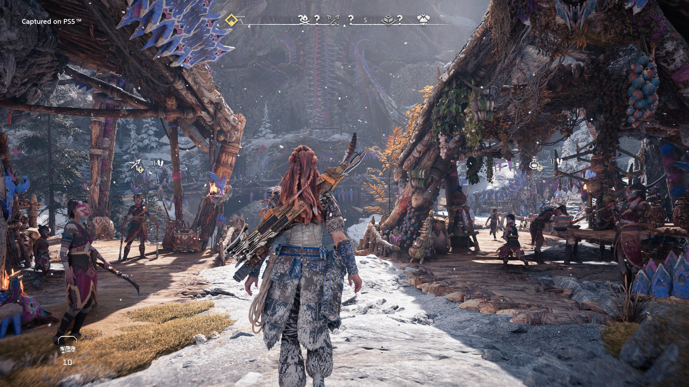

Horizon Forbidden West



Lançamento: Fevereiro de 2017
Plataformas: PlayStation 4, PlayStation 5, PC, Xbox One, Xbox Series X/S, e Stadia
Horizon Zero Dawn é um jogo de ação e aventura desenvolvido pela Guerrilla Games, ambientado em um futuro pós-apocalíptico onde a humanidade é dominada por máquinas gigantescas. O jogo segue a jornada de Aloy, uma jovem caçadora que busca descobrir o segredo de seu passado e a verdade sobre o mundo em que vive.
Características Principais
- Exploração em Mundo Aberto: Descubra um vasto mundo aberto, com uma variedade de ecossistemas, desde florestas densas até desertos áridos, todos habitados por máquinas e fauna selvagem.
- Combate Dinâmico: Enfrente uma variedade de máquinas com diferentes estratégias e armas, utilizando habilidades de caçadora e uma série de equipamentos avançados.
- Narrativa Envolvente: Acompanhe a história de Aloy enquanto ela desvela mistérios antigos e enfrenta desafios para compreender a origem das máquinas e o papel da humanidade no novo mundo.
- Sistema de Crafting e Progressão: Colete recursos e artefatos para melhorar seu equipamento, criar novas armas e habilidades, e personalizar seu estilo de jogo.
- Gráficos e Design: A estética visual é marcada por gráficos de alta qualidade que capturam a beleza selvagem e a complexidade das máquinas, oferecendo uma experiência imersiva e visualmente impressionante.
Horizon Zero Dawn combina uma narrativa rica com um mundo aberto expansivo e um combate envolvente, oferecendo aos jogadores uma experiência memorável em um futuro vibrante e misterioso.